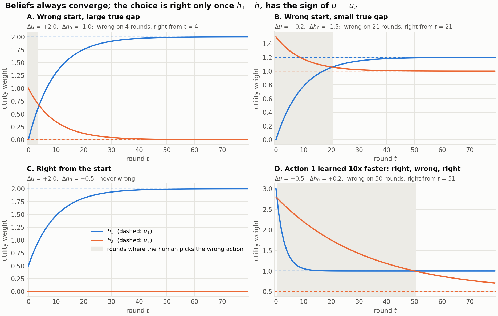
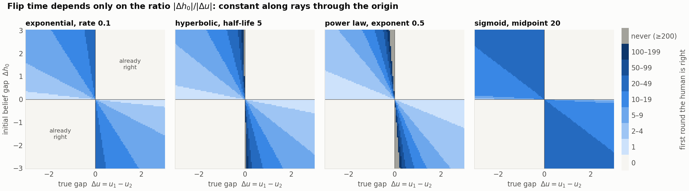
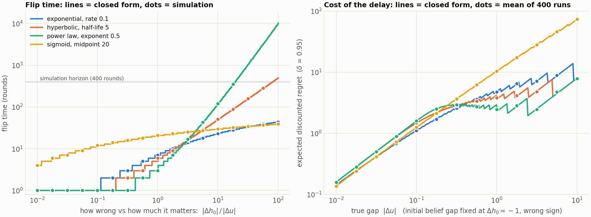

Experiment 1
One feature, two actions, feature always shown
The human's beliefs are guaranteed to converge. These figures ask when the choice becomes right, and what the wait costs. They are written by the batch script, which sweeps thousands of worlds at once:
python -m experiments.exp01_single_feature_flip
Four worlds under an exponential learner. Beliefs always converge, but the choice is right only while h1 - h2 has the sign of u1 - u2. In D each action has its own speed, so a human who starts right goes wrong for 50 rounds before coming back.

With one shared learning curve the flip time depends only on the ratio of the two gaps, so it is constant along rays through the origin. Grey cells never flip within 200 rounds.

Left: flip time against the ratio of the gaps, closed form against simulation. Right: expected discounted regret for a fixed wrong belief as the true gap grows.